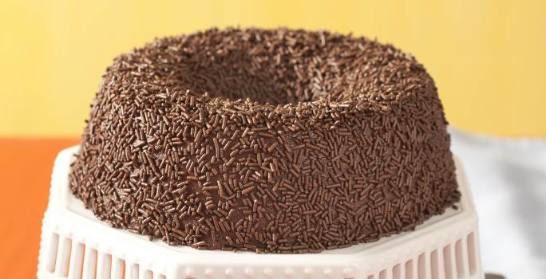

Fim da Página
Restaurante Starbuzz
Receita Brigadeirão
______________________________________________________________

Ingredientes:
1 Leite MOÇA® (lata ou caixinha) 395g;
1 lata de NESTLÉ® Creme de Leite;
1 xícara (chá) de Nescau®;
4 colheres (sopa) de açúcar;
1 colher (sopa) de manteiga;
3 ovos;
Meia xícara (chá) de chocolate granulado para decorar.
Modo de Preparo:
Em um liquidificador, bata o Leite MOÇA com o Creme de Leite NESTLÉ, o NESCAU, o
açúcar, a manteiga e os ovos até que esteja homogêneo.
Despeje em uma fôrma com furo central (19 cm de diâmetro) untada com manteiga.
Cubra com papel-alumínio e asse em forno médio (180°C), em banho-maria, até
ficar firme (cerca de 1 hora e meia).
Desenforme ainda morno e decore toda a superfície com o chocolate granulado.
Leve à geladeira por cerca de 6 horas e sirva.
Início da Página